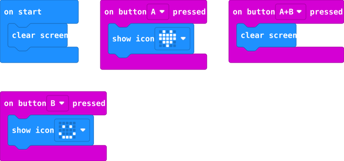

September 24 backup plan · Student learning companion
Watch. Try.
Check. Explain.
Short lessons you can pause and repeat. Choose your pathway and follow the steps at your own pace within today's activity times.
Start here
Wearables: module 1, then module 2. Module 4 is optional before the 10:05 needle count. Robotics: module 3, then optional module 5. Everyone: module 6 at 11:17 with your mentor, then proposals.
Open one video at a time. Watch, pause, do the written step, and compare the result. BirdBlox videos are silent: the written instructions are your guide. You can use the written lessons if media is blocked. No additional homework is assigned.
Photos below are real manufacturer/supplier reference photographs, not photos of our classroom inventory. Match the actual markings with your mentor. Diagrams and block drawings are labeled illustrations. Tap photos or diagrams to enlarge.
1 · Sew a one-LED felt circuit
Wearables · Share one set per pair · Finish or save progress by 10:05.
See supply photos6 reference photos · tap to identify
Product/reference photos, not our delivered inventory. Tap a photo to enlarge it. Compare the actual labels and kit list; appearance alone does not confirm electrical compatibility. These optional photos stay out of printouts.

Each small board is one LED. This SparkFun example shows six linked boards; our order lists Leyal LEDs. Compare the actual +/− pads.
Photo: SparkFun
Coin-cell slot, slide switch, and sewing pads. SparkFun example; verify the actual ordered holder.
Photo: SparkFun
Flat round cell marked CR2032. Brand may vary; use only the approved holder and keep loose cells with mentors.
Photo: SparkFun
Metallic gray thread on bobbins. Check the label; ordinary floss cannot replace it in a circuit.
Photo: Amazon product listing
Metal needles with an eye at one end. Example set; test the ordered JNENERY needle with the actual thread and holes.
Photo: SparkFun
Colored handle with a thin wire loop. The ordered TOOVREN tool helps pull thread through the eye.
Photo: Amazon product listingWatch: sewable-electronics overview
This is an overview of a supplier kit. Identify the holder, sew pads, and conductive thread; use the parts approved for our classroom circuit.
SparkFun photo tutorial: needle, pad loops, stitches, knots, and short-circuit checks · Our detailed circuit preparation

- Identify. Place the holder and LED on felt. Point to each + and − marking. Ask Jennifer to confirm the matching cell and LED/module; do not infer compatibility from a photo.
- Trace. With no battery installed, draw one route from holder + to LED + and a separate route from LED − to holder −. Check that neither route crosses on the front or back.
- Practice. Thread a counted needle. On scrap felt, make small running stitches and snug loops through a practice pad. Each partner takes a turn; ask Jennifer to check the connection.
- Sew the positive route. Follow the approved example: secure the thread, make snug pad loops, stitch to the other + pad, secure the end, and trim its loose tail. Do not continue that same strand into the negative route.
- Sew the negative route. Use a separate strand for the two − pads. Keep stitches and knots separated from the positive route on both sides.
- Stop for inspection. Keep the battery out. Show both sides to Jennifer. Point out loose tails, crossings, or frayed thread for correction before a powered test.
- Test and document. After approval, install the cell in the holder’s marked orientation and test. Record lit / not lit and what you observed. Remove power before any repair; stop and tell a mentor if a component becomes warm.
- Save and return. Photograph both sides and explain your contribution. Return every needle before snack and before coding. An unfinished sample can be saved with its next step.

Check yourself: Can one continuous thread connect all four pads?
No. That can join the positive and negative paths. Use the two separate paths in the approved example; inspect both fabric sides before power.
If the LED does not light
Remove the cell. Check the marked polarity, switch position, pad loops, and loose tails with your mentor. Do not add more batteries or bypass components. Record powered test pending if the fault is unresolved.
2 · Make buttons communicate
Wearables · 10:05–11:09 · Use the W board and laptop; leave the Hummingbird R boards with their kits.
See supply photos3 reference photos · tap to identify
Product/reference photos, not our delivered inventory. Tap a photo to enlarge it. Compare the actual labels and kit list; appearance alone does not confirm electrical compatibility. These optional photos stay out of printouts.

Small board with A/B buttons, LED display, and gold edge pads. Keep W and R kit labels with their assigned boards.
Photo: Adafruit
Reference bundle shows board, micro-USB cable, and holder for two AAA cells. Compare with the delivered Club Kit.
Photo: Adafruit
Large USB-A end and small micro-USB end. Appearance cannot prove data support; test transfer with the actual cable.
Photo: BirdBrain / CreXoWatch: transfer code over USB
Watch the connection and transfer sequence. A cable that supplies power may still lack data wires.

- Open. Go to MakeCode, create a project, and give it a recognizable name. Or open our editable starter and text code.
- Start clear. In Blocks, place Basic → clear screen inside on start. Remove an unused forever block to keep your workspace readable.
- Add A. Drag Input → on button A pressed onto the workspace. Put Basic → show icon inside it and choose the heart.
- Add B and A+B. Add two more button events. Select B and place a happy-face icon inside; select A+B and place clear screen inside.
- Simulate. Click A, B, and A+B on the on-screen board. Predict each result first. Fix an icon in the wrong event before downloading.
- Transfer. Connect the W board using the tested USB data cable. Follow the editor’s Download instructions; if it saves a .hex file, copy it to the MICROBIT drive. Wait for transfer activity to finish.
- Test together. Press the physical buttons. Repeat the A/B/A+B sequence three times; swap roles so both partners can explain and test the program. Label a simulator-only result honestly.
- Personalize and save. Change two symbols for a user, ask a partner what they mean, and retest. Download the .hex file and save a screenshot. Use mentor-approved battery power only after disconnecting USB in this classroom workflow.
Check yourself: Does a successful simulator test prove the USB transfer worked?
No. Record the simulator result separately and test the physical board after the transfer.
If the board does not appear
Keep your code open. Check the cable and connection with Tri; try the tested spare data cable. Continue in the simulator and record physical transfer pending. Do not reflash an R board to replace it.
3 · Connect, sense, and respond
Creative Robotics · Finish core evidence by 11:09 · One kit and iPad per pair.
See supply photos6 reference photos · tap to identify
Product/reference photos, not our delivered inventory. Tap a photo to enlarge it. Compare the actual labels and kit list; appearance alone does not confirm electrical compatibility. These optional photos stay out of printouts.

Controller with labeled sensor, LED, and servo connections. Its assigned micro:bit is a separate required component.
Photo: BirdBrain / CreXoSmall board with A/B buttons, LED display, and gold edge pads. Keep W and R kit labels with their assigned boards.
Photo: Adafruit
LED on a two-wire lead. It connects to the controller; it is different from the flat sewable LED board.
Photo: BirdBrain / CreXo
Small sensor with two round transducers. Use the labeled Hummingbird sensor and its documented port connection.
Photo: BirdBrain / CreXo
Motor case with output shaft/horn and a three-wire lead. Check the model label: rotation servos can look similar.
Photo: BirdBrain / CreXo
Kit battery pack holds four AA cells. Keep it matched to the Robotics controller; it is not a Wearables AAA pack.
Photo: BirdBrain / CreXoWatch: connect the assigned kit
Match the kit identity; do not connect to a neighboring table. These official clips are silent; read the steps below.
Watch: single-color LED connection
With kit power off, compare the LED port and polarity with your mentor-approved setup. These official clips are silent; read the steps below.
Watch: LED programming
Find the LED control block and identify its port and brightness fields. These official clips are silent; read the steps below.
Watch: light sensor introduction
Choose this only if your kit has the mentor-identified light sensor. Record two actual readings. These official clips are silent; read the steps below.
Watch: dial sensor introduction
Choose this only for a dial sensor. Compare two knob positions; let the mentor confirm your comparison. These official clips are silent; read the steps below.
Watch: distance sensor introduction
Choose this only for the distance sensor. Use your tested positions and comparison; do not copy an unrelated threshold. These official clips are silent; read the steps below.
Watch: button input introduction
Use only the mentor-prepared button fallback if a sensor is unavailable. Mark sensor work deferred. These official clips are silent; read the steps below.
Watch: position servo connection — optional
Watch for later understanding. Physical movement requires a secured servo and mentor-released travel range. These official clips are silent; read the steps below.
- Identify and inspect. Record your R kit name, actual sensor type, and input/output ports. Stephanie checks wiring with power off. Two LEDs are enough for today’s nonmoving version.
- Connect. Use the assigned iPad in BirdBlox, open a named project, and connect to your kit’s identity. Ask for help if it is missing; students do not replace the kit firmware.
- Read the input. Watch the lesson that matches the actual sensor. Show two repeatable conditions and write down their readings. Have Stephanie confirm the threshold, units, and comparison direction.
- Test outputs separately. For the two-LED setup use LEDS 1 and 2. Test LED 1 at the approved brightness and back to 0, then LED 2. If nothing lights, stop and ask for a power-off wiring check.
- Build one finite response. Start with both LEDs at 0. Use if/else for the approved input condition: true → LED 1 at 50, LED 2 at 0; false → LED 1 at 0, LED 2 at 50. Wait one second, then set both to 0. Stephanie rehearses this on the actual kit before release.
- Predict and test. Run once for each condition. Record three trials with condition, prediction, actual response, and reset. Change one thing and retest the same conditions.
- Swap and explain. Exchange Driver/Navigator. Each partner traces input → decision → output and explains how the program ends.
- Save and shut down. Save the BirdBlox project, capture readable blocks and the actual setup, then use the rehearsed reset, Stop, disconnect, and power off. For unexpected movement, heat, or a jam, power off and call the mentor; do not command another movement.
Check yourself: Are two LEDs two different types of output?
They are two output devices of the same type. Record motion deferred if you did not test a servo.
If the sensor or connection fails
Save the readings or connection message. Recheck the assigned kit identity with Stephanie. Use only her rehearsed fallback, or observe a working demonstration and label it observed. Do not invent passing trials.
4 · Optional: Glowing Pin
Wearables · 10–20 minutes of remaining Circuit Lab time · Stop for needle count at 10:05.
Open SparkFun’s photo-by-photo Glowing Pin tutorial. This is an inspiration example; our parts and LED orientation may differ.
- Choose a character, symbol, or message for the existing inspected felt circuit. Sketch where its single light belongs.
- Remove the cell before trimming or adding stitching. Keep decoration and attachments away from conductive paths and keep the battery holder accessible.
- Show both sides to Jennifer again before a powered test. A pin back is optional and only used if available and approved; a flat glowing sample is a complete practice outcome.
- Save a photo with one sentence explaining the light. Share the circuit with your partner and record your own contribution. Return all needles on time.
Materials and mentor instructions · Review photos and circuit steps. This uses a coin cell, not a micro:bit. It is separate from the October 13 badge event.
5 · Optional: Robot Mood
Creative Robotics · 10–15 minutes after core evidence · End by 11:09.
Use two LEDs to communicate welcome/wait or calm/excited. This is our classroom extension; the official LED and input clips above teach its component skills.
- Sketch two messages and choose which tested input condition means each. Keep the existing ports and mentor-approved comparison.
- Copy your working program under a new name. Start both LEDs at 0. In the true branch, keep LED 2 off and light LED 1 at the approved brightness for one second.
- In the false branch, keep LED 1 off. Repeat twice: LED 2 on, wait 0.25 seconds, LED 2 off, wait 0.25 seconds. End the whole program with both LEDs at 0. Run once per test.
- Swap roles, try both conditions, and ask another pair to interpret the messages. Change one pattern and retest. Save blocks and a short result before shutdown.
Check yourself: Must we build a moving robot body to finish?
No. Two LEDs on the table can demonstrate the interaction. A paper face is optional; servo work needs a separately tested setup.
6 · Paper Future Stamp and NeoPixel observation
Everyone · Follow the 11:17–11:45 shared session: share, draw, observe. Wood stitching and physical NeoPixel testing remain deferred.
- After the group share, choose a future person or need. Draw a simple symbol on paper or digitally, choose two colors, and write what they mean. Label it paper symbol design; wood stitching deferred.
- Watch the preview below or open the illustrated blocks. Sketch a possible hat-light pattern. Describe what A, B, and A+B off could do.
- Save the sketch as observed video or observed diagram/code, whichever you used. A video is not evidence that your own strip works. Do not assemble a new pixel power harness today.
Watch: official micro:bit NeoPixel preview
Open video directly · Official illustrated example. This hardware example does not replace our prepared system’s wiring instructions.
Watch: coding NeoPixel patterns
Observe programming ideas. Use our illustrated starter to discuss A/B/off behavior; physical tests are deferred.
Our illustrated blocks and text starter · Labeled system diagram
See supply photos2 reference photos · tap to identify
Product/reference photos, not our delivered inventory. Tap a photo to enlarge it. Compare the actual labels and kit list; appearance alone does not confirm electrical compatibility. These optional photos stay out of printouts.
Repeated square LEDs on flexible tape. Read the actual voltage, data arrow, and pixel density; variants look similar.
Photo: BTF-LIGHTING
Mating black plugs with a latch and three wire positions. Match the tested pin map, not wire colors alone.
Photo: AdafruitSave, explain, and continue
Use the existing studio sheets or a named digital record. For every activity write: what I tried → what happened → one change → what I still need to test. Mark results physical, simulator, observed, or deferred.
- Wearables: each student explains her own contribution to shared practice.
- Robotics: both partners explain the complete interaction and reset.
- Save code plus a readable screenshot; a screenshot alone cannot be loaded back onto the board.
- If Canvas upload fails, record the local file location and upload pending.
Required evidence checklist and proposals · Mentor review and next tests
Use your three ideas and labeled proposal after the shared preview. Optional activities do not replace those deliverables. Stop for cleanup at 2:21.